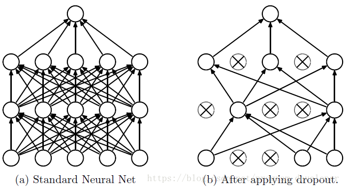
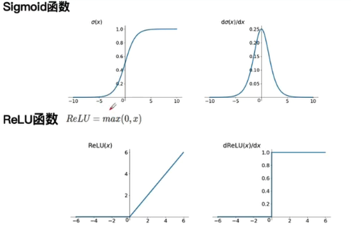
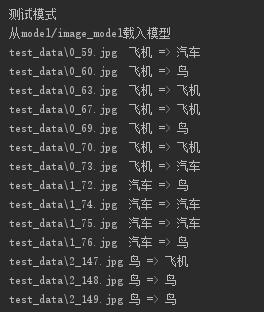

CNN-简单图片分类
假期的时候跟着专知的一个深度学习课程学习了一些深度学习的内容，也是愈发觉得神经网络十分神奇，最近看了一份简单的图片分类的CNN网络，记录学习一下，从简单学起~
大部分神经网络的基础就不再写了，网上也有很多介绍，这里就照着代码，顺一遍基本的使用方法~
简略介绍
训练样本50张，分为3类：
- 0 => 飞机
- 1 => 汽车
- 2 => 鸟
图片都放在data文件夹中，按照label_id.jpg进行命名，例如2_111.jpg代表图片类别为2（鸟），id为111。
导入相应库
1
2
3
4
5
6
7
8
|
import os
from PIL import Image
import numpy as np
import tensorflow as tf
|
读取数据
1
2
3
4
5
6
7
8
9
10
11
12
13
14
15
16
17
18
19
20
21
22
23
24
25
26
27
28
29
30
31
32
33
34
35
36
37
38
39
40
41
42
43
44
45
46
47
48
49
50
|
data_dir = "data"
test_data_dir = "test_data"
train = False
model_path = "model/image_model"
def read_data(data_dir,test_data_dir):
datas = []
test_datas = []
labels = []
test_labels = []
fpaths = []
test_fpaths = []
for fname in os.listdir(data_dir):
fpath = os.path.join(data_dir, fname)
fpaths.append(fpath)
image = Image.open(fpath)
data = np.array(image) / 255.0
label = int(fname.split("_")[0])
datas.append(data)
labels.append(label)
for fname in os.listdir(test_data_dir):
fpath = os.path.join(test_data_dir, fname)
test_fpaths.append(fpath)
image = Image.open(fpath)
data = np.array(image) / 255.0
label = int(fname.split("_")[0])
test_datas.append(data)
test_labels.append(label)
datas = np.array(datas)
test_datas = np.array(test_datas)
labels = np.array(labels)
test_labels = np.array(test_labels)
print("shape of datas: {}\tshape of labels: {}".format(datas.shape, labels.shape))
return fpaths, test_fpaths, datas, labels, test_labels, test_datas
fpaths, test_fpaths, datas, labels, test_labels, test_datas = read_data(data_dir,test_data_dir)
num_classes = len(set(labels))
|
这一部分代码主要就是实现将文件夹中的训练样本读取出来，保存在numpy数组中。
定义placeholder(占位符)
1
2
3
4
5
6
|
datas_placeholder = tf.placeholder(tf.float32, [None, 32, 32, 3])
labels_placeholder = tf.placeholder(tf.int32, [None])
dropout_placeholdr = tf.placeholder(tf.float32)
|
palceholder
可以将placeholder理解为一种形参吧，然后不会被直接运行，只有在调用tf.run方法的时候才会被调用，这个时候需要向placeholder传递参数。
函数形式：
1
2
3
4
5
| tf.placeholder(
dtype,
shape=None,
name=None
)
|
dropout
dropout主要是为了解决过拟合的情况，过拟合就是将训练集中的一些不是通用特征的特征当作了通用特征，这样可能会在训练集上的损失函数很小，不过在测试的时候，就会导致损失函数很大。举个例子吧，就像用一个网络来判断这是不是一只猫，而训练集中的猫都是白色的，这样就可能会导致整个网络将白色当作判断猫的一个重要特征，而测试集中的猫可能什么颜色都有，这样就会导致损失函数很大。
- 而dropout的解决方法就是在训练的时候，以一定的概率让部分神经元停止工作，这样就可以减少特征检测器（隐层节点）间的相互作用，避免过拟合情况的发生。
- 测试时整合所有神经元

定义卷积神经网络（卷积层和pooling层）
1
2
3
4
5
6
7
8
9
|
conv0 = tf.layers.conv2d(datas_placeholder, 20, 5, activation=tf.nn.relu)
pool0 = tf.layers.max_pooling2d(conv0, [2, 2], [2, 2])
conv1 = tf.layers.conv2d(pool0, 40, 4, activation=tf.nn.relu)
pool1 = tf.layers.max_pooling2d(conv1, [2, 2], [2, 2])
|
sigmoid与relu

relu函数解决了梯度消失问题。
- 在BP算法中，反向传播的过程是一个链式求导的过程（误差通过梯度传播），不过使用sigmoid函数，其中可能某一项的导数存在极小值，这样就会导致整个偏导的导数值较小，导致误差无法向前传播，这样的话，前几层的参数无法得到更新。
- 不过relu函数就解决了这个问题啦
max-pooling
池化层有mean-pooling、max-pooling啥的。
pooling层主要是保留特征，减少下一层的参数量和计算量，同时也能防止过拟合。
例如：max-pooling层的大小为2x2，那么就会对一个2x2的像素快进行取样，得到这个小区域的最大值，并将这个值来代表这个区域块传递到下一层中。
通过这样的方式就可以来减少参数量和计算量，并且还保持某种不变性，包括translation(平移)，rotation(旋转)，scale(尺度)
定义全连接部分
1
2
3
4
5
6
7
8
9
10
11
12
13
|
flatten = tf.layers.flatten(pool1)
fc = tf.layers.dense(flatten, 400, activation=tf.nn.relu)
dropout_fc = tf.layers.dropout(fc, dropout_placeholdr)
logits = tf.layers.dense(dropout_fc, num_classes)
predicted_labels = tf.arg_max(logits, 1)
|
全连接层，加上dropout，然后最后定义输出层。
1
2
3
4
| arg_max(a, axis=None, out=None)
|
返回沿轴axis最大值的索引值，也就是最可能的标签值。
定义损失函数和优化器
1
2
3
4
5
6
7
8
9
10
|
losses = tf.nn.softmax_cross_entropy_with_logits(
labels=tf.one_hot(labels_placeholder, num_classes),
logits=logits
)
mean_loss = tf.reduce_mean(losses)
optimizer = tf.train.AdamOptimizer(learning_rate=1e-2).minimize(losses)
|
代码中的one_hot()函数的作用是将一个值化为一个概率分布的向量，一般用于分类问题。然后再用reduce_mean()得到平均值。
执行阶段
1
2
3
4
5
6
7
8
9
10
11
12
13
14
15
16
17
18
19
20
21
22
23
24
25
26
27
28
29
30
31
32
33
34
35
36
37
38
39
40
41
42
43
44
45
46
|
saver = tf.train.Saver()
with tf.Session() as sess:
if train:
print("训练模式")
sess.run(tf.global_variables_initializer())
train_feed_dict = {
datas_placeholder: datas,
labels_placeholder: labels,
dropout_placeholdr: 0.25
}
for step in range(136):
_, mean_loss_val = sess.run([optimizer, mean_loss], feed_dict=train_feed_dict)
if step % 10 == 0:
print("step = {}\tmean loss = {}".format(step, mean_loss_val))
saver.save(sess, model_path)
print("训练结束，保存模型到{}".format(model_path))
else:
print("测试模式")
saver.restore(sess, model_path)
print("从{}载入模型".format(model_path))
label_name_dict = {
0: "飞机",
1: "汽车",
2: "鸟"
}
test_feed_dict = {
datas_placeholder: test_datas,
labels_placeholder: labels,
dropout_placeholdr: 0
}
predicted_labels_val = sess.run(predicted_labels, feed_dict=test_feed_dict)
for fpath, real_label, predicted_label in zip(test_fpaths, test_labels, predicted_labels_val):
real_label_name = label_name_dict[real_label]
predicted_label_name = label_name_dict[predicted_label]
print("{}\t{} => {}".format(fpath, real_label_name, predicted_label_name))
|
这一部分代码感觉没啥特别好写的，大部分都写在注释里了，而且一些写法应该也是比较固定的，，，，
总结
可以看一下运行结果

感觉效果还是挺好的，真的挺神奇的。在这个过程中也是学习到了很多知识，这个整理总结归纳的过程也是收获颇多，以后继续加油~